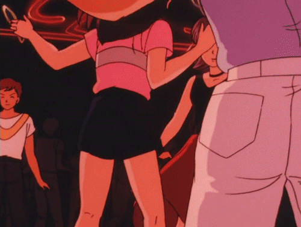

AKIHABARA
LAS PELICULAS DE ANIME QUE NO PUEDES DEJAR PASAR
Te prometemos que el anime es mucho más que «esos monos chinos» que ven tus amigos raros. Dale una oportunidad. Toma esto como un rito de iniciación. Las siguientes listas son a partir de mi experiencias así que pueda estar uno más de acuerdo o no, de lo que no hay duda es que al menos recordar estos animes y adaptaciones de mangas es un verdadero placer. Un estilo, formas y contenidos inimitables que trasladan nuestra imaginación a universos, historias y personajes extraordinarios. ASÍ QUE SIN MÁS COMENZEMOS |
|  |
 Inicio Peliculas clásicas |
 Para llorar un rato |
 Nostalgia |
 Próximos estrenos |
AKIRALa producción nos sitúa en este mismo año, 2019, contexto en que Neo-Tokio se ve amenazado cuando un proyecto militar convierte a un pandillero en un psicópata que puede hacer y deshacer a gusto con su habilidades psíquicas. Entre caos, motocicletas y ningún bando claro al que llamar “héroe” o “villano”, Akira marcó un antes y después a la hora de desmantelar la creencia de que la animación no es apropiada para desarrollar tópicos adultos. | |||||
Mima es la cantante de un famoso grupo musical japonés. Debido al fracaso de ventas de sus discos, su mánager
decide apartarla del grupo y darle un papel en una serie de televisión. Mima cae entonces en una profunda depresión que la lleva a replantearse su vida y su carrera, pero su crisis se
agrava cuando descubre que su vida está al alcance de cualquiera en Internet y que alguien la está vigilando. Cuando la serie empieza a emitirse por televisión, Mima comprueba que
la ficción se reproduce en su vida real: sueño y realidad se confunden hasta el punto de cuestionarse su propia identidad. El desarrollo de los acontecimientos y su propia intuición llevarán
a la protagonista a un desenlace absolutamente inesperado | |||||
PaprikaBasada en la novela del mismo nombre escrita en 1993, Paprika se trata de una psicóloga de investigación que usa terapia de inserción de sueño, financiada por una entidad privada para tratar a sus pacientes. Básicamente, ella viaja por los sueños de sus pacientes con un dispositivo que funciona mientras ambos estén dormidos. La historia se complica cuando uno de los dispositivos es robado y alguien comienza a atacar a la fundación. Brutalmente onírica, pero en su totalidad un precioso viaje por el mundo de los sueños. | |||||
Ghost in the shellMamoru Oshii es el maestro director de esta pieza que nos guía a través de la historia de Motogo Kusanagi, una oficial mitad humana y mitad cyborg que pasa por una serie de problemas emocionales y vivenciales. Además de haber creado el arquetipo de mitad humano y mitad cyborg, Ghost in the Shell ha marcado la pauta en el cine de anime en cuanto a ciencia ficción, siendo una de las referencias más importantes del género. |  |
||||
La princesa Mononokenos narra la historia de una guerra eterna. Tratando de proteger a su aldea del ataque de un dios consumido por el odio, el joven príncipe Ashitaka es maldecido con un estigma que acabará con su vida si no hace algo para evitarlo. Entonces emprenderá un viaje que le llevará hasta las tierras del Espíritu del Bosque, la única criatura con el poder para curarle. Para cuando llegue, se verá en mitad de una batalla entre las criaturas que habitan el bosque y las personas de una aldea cercana que talan árboles para una fundición. El progreso del hombre quiere someter a la naturaleza. Y esta se rebelará. |
Inicio Peliculas clásicas |
Para llorar un rato |
Nostalgia |
Próximos estrenos |